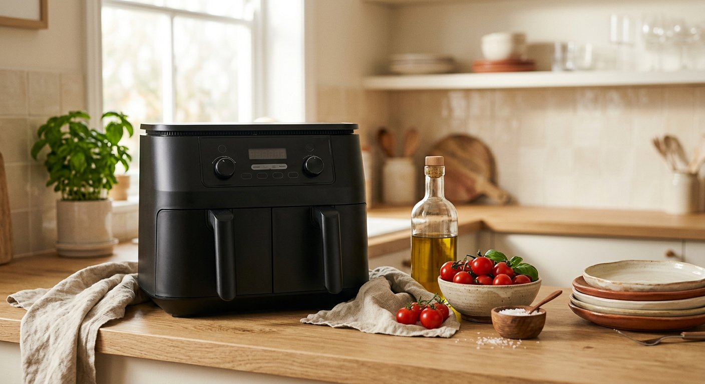
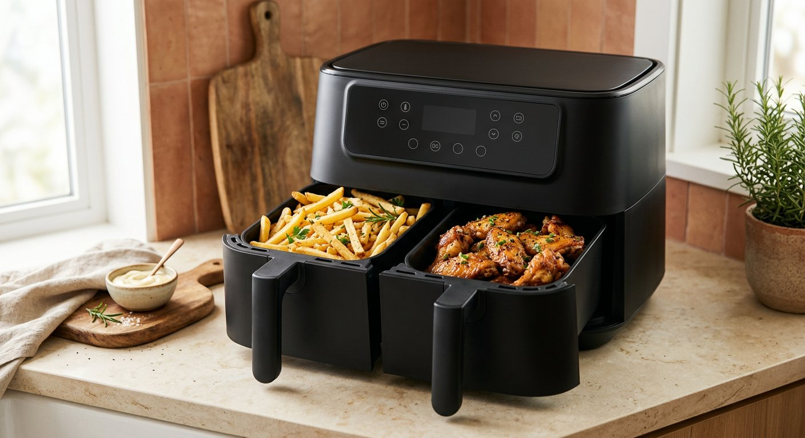
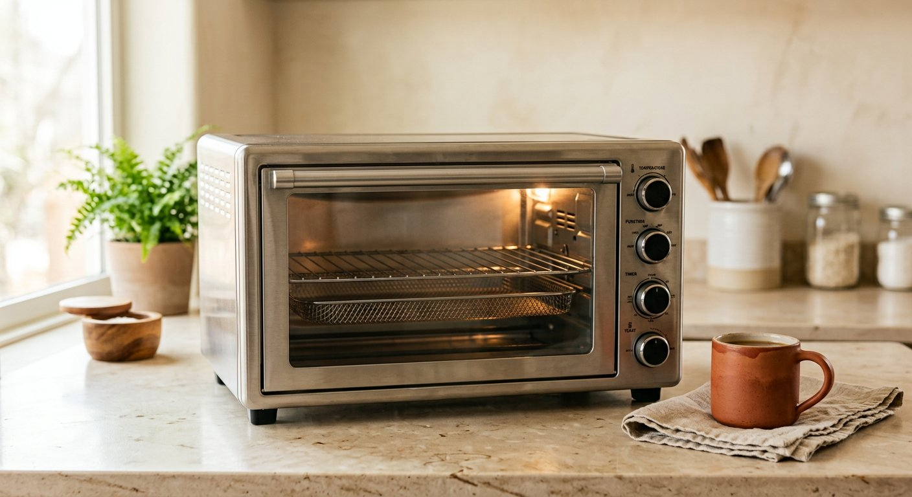
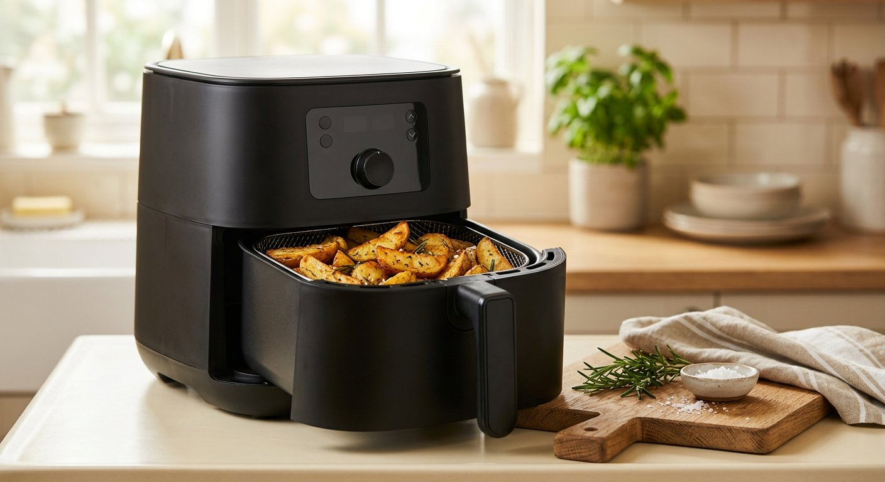
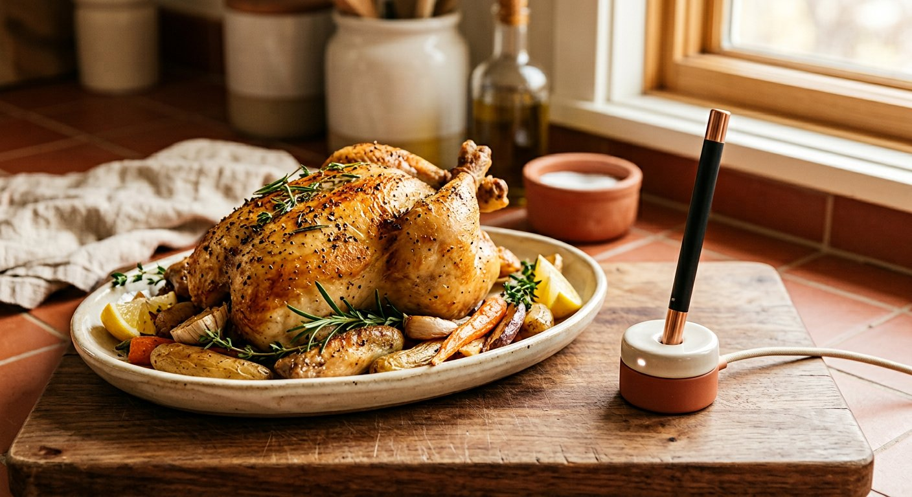
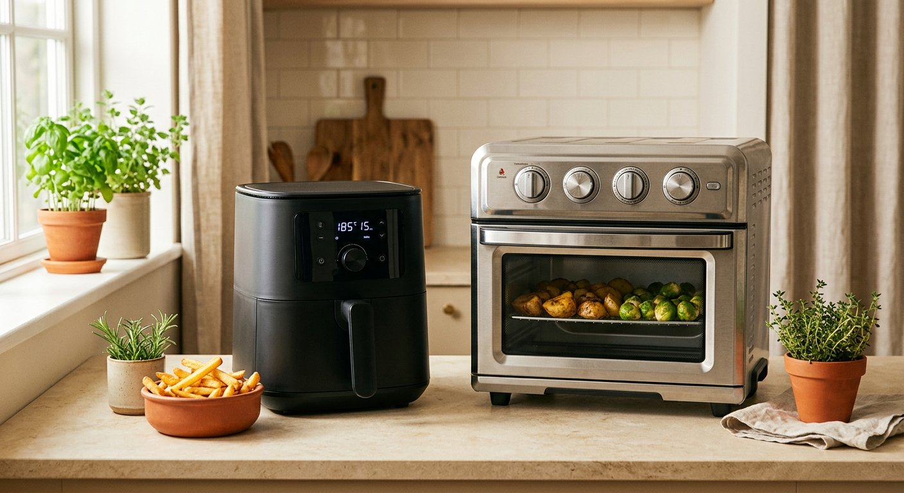
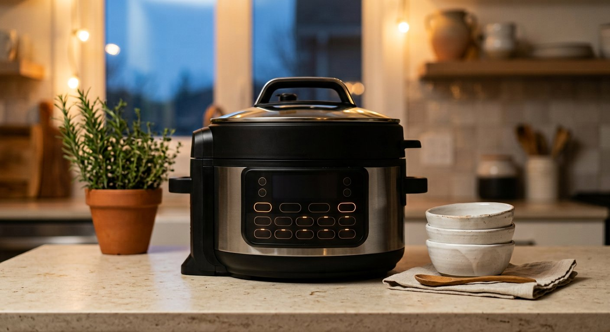

Reader-supported · Kitchen shop & guides
Air fryers, ovens & the boring questions that decide them
Dual-basket or oven-style? Does the quart number even mean what you cook? What will you actually wash every night, and what will it cost you in counter space? We publish the questions first, the picks second — and we say so when a listing is still unconfirmed.

This week's shortlist

Dual-basket air fryer
Two foods, two settings, one counter spot. Our category notes: per-basket capacity that's honest, sync logic you can read on the panel, baskets that survive the dishwasher.

French-door air-fryer toaster oven
The oven-style format trades basket simplicity for range — toast, bake, rotisserie, air-fry — at the cost of counter real estate. Honest interior dimensions beat marketing quarts.

Family-size basket air fryer
The classic single basket, sized up. Fast weeknight proteins, frozen sides, one drawer to wash — if the basket shape fits a family portion without stacking.

The fifth link — cross-checked
Our own fetch hit an Amazon checkpoint page; the canonical register's observation resolved it to a listing (B0DHZTCNR5). Both observations are published, dated — neither is hidden.

Wireless smart meat thermometer
The quiet companion purchase: converts guess-and-check into a number, which matters most with thick cuts and multi-function appliances that cook unevenly at first.
Shop first, but shop honest
Each link's destination was observed on 2026-11-20, but listing identity is confirmed only inside the Associates workflow. Until then: the category notes are real, the identities stay provisional, and the price cells stay blank. Read the full records →
Start with the question, not the product

Basket or oven-style air fryer: what should you compare?
Timing, shape, cleanup, range — the comparison that decides whether you'll use it weekly or store it in the garage.

A no-hype checklist for comparing air fryer capacity
Quarts lie a little. Portions per basket, shape, and what you actually cook — a checklist that survives the marketing.

How to assess cleanup and counter-space trade-offs
The two costs no spec sheet leads with: what you'll wash every night, and what you'll give up on the counter.

Questions to ask before buying a multi-function kitchen appliance
Twelve presets sound great until you only ever use three. The questions that separate keepers from garage shelves.
The season, in one line
Holiday counter real estate
Hosting season is when the counter-space question stops being theoretical. Our cleanup & footprint guide is the season's anchor read, and the oven-style record is the format most shoppers graduate to.
Seasonal picks pages
Curated seasonal gift pages go live only once each listing is confirmed in the Associates workflow — a curated page with unverified picks is just a list with better lighting. Track the gate on the compliance page.
Numbers above describe this site's own work, each verifiable on its page — source register · intent records · flagged for review. No sales, conversion or revenue figures are presented anywhere.